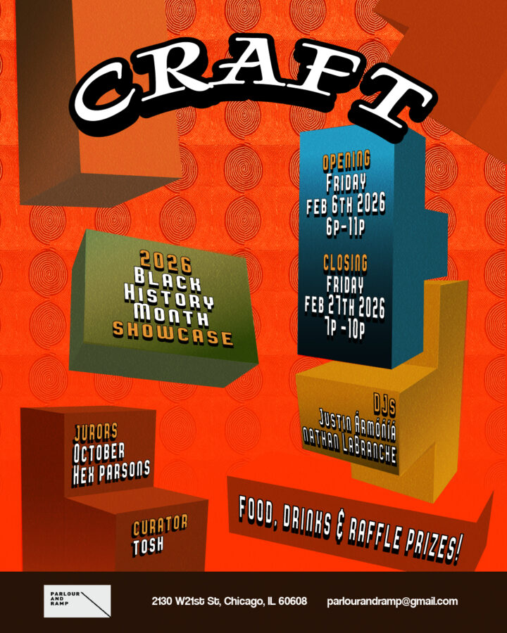

CRAFT : 3rd Annual Black History Month Showcase
Explore the vast expressions of Afro-futurism in Craft
The Third Annual Black History Month Showcase at Parlour and Ramp. Join us in a celebration of Black art, culture and community FRIDAY, FEBRUARY 6th 6-11 PM.
We’re excited to welcome all 13 Chicago based artists and this year’s sponsors!
Shop with local vendors, enjoy a bite to eat and enter our Wellness Raffle!
The Black History Month Art Talk Saturday, February 7th 1-4pm
Closing Reception Art Talk (featuring Best in Show)
Friday, February 27th 7-10pm y,